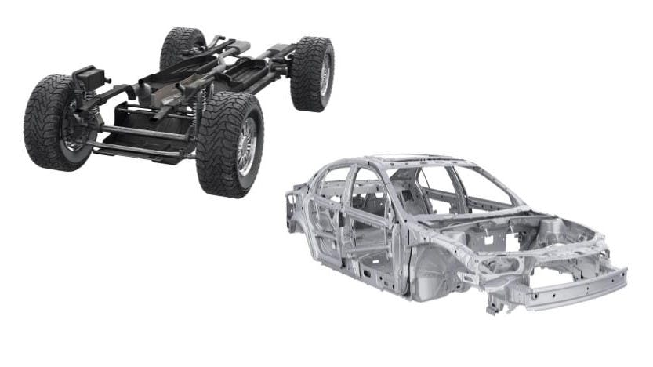
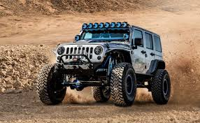

Șasiul: Structura de Rezistență
Șasiul reprezintă cadrul pe care sunt montate toate celelalte componente ale automobilului. Rolul său principal este de a oferi rigiditate structurală și de a proteja ocupanții în caz de impact.
În industria modernă, majoritatea autoturismelor folosesc o structură monococă (caroserie autoportantă), unde șasiul și caroseria formează un singur corp unitar, reducând greutatea și crescând siguranța. Autovehiculele de teren și camioanele folosesc încă șasiul tip scară, apreciat pentru rezistența la torsiune în condiții grele.

Comparație Tipuri de Șasiu
| Caracteristică | Monococă (Autoturisme) | Tip Scară (Off-road/Camioane) |
|---|---|---|
| Greutate | Redusă (Eficientă) | Ridicată (Robustă) |
| Siguranță (Impact) | Excelentă (Zone de deformare) | Medie (Structură rigidă) |
| Utilizare | Viteză, oraș, consum mic | Tractare, teren accidentat |
Trenul de Rulare și Suspensia
Trenul de rulare este ansamblul care face legătura între roți și șasiu. Acesta dictează cum „simte” șoferul drumul. Cele mai importante sisteme sunt:
Suspensia
Sistemul de suspensie reprezintă legătura elastică dintre roți și șasiu, având rolul dublu de a asigura confortul pasagerilor și stabilitatea vehiculului. Acesta utilizează arcuri pentru a prelua energia impactului cu denivelările și amortizoare pentru a controla oscilațiile caroseriei, garantând că anvelopele mențin un contact constant cu suprafața de rulare.
Sistemul de Frânare
Esențial pentru siguranța activă, sistemul de frânare convertește energia cinetică a mașinii în energie termică prin frecare. La apăsarea pedalei, presiunea hidraulică împinge plăcuțele pe discuri (sau saboții pe tamburi), generând forța necesară pentru încetinirea sau oprirea completă a roților în cel mai scurt timp posibil.
Direcția
Sistemul de direcție permite șoferului să controleze traiectoria vehiculului prin orientarea roților directoare de pe puntea față. Acesta transformă mișcarea de rotație a volanului într-o mișcare liniară a mecanismului de direcție, utilizând adesea servoasistența (hidraulică sau electrică) pentru a reduce efortul fizic necesar manevrării, mai ales la viteze mici sau pe loc.
